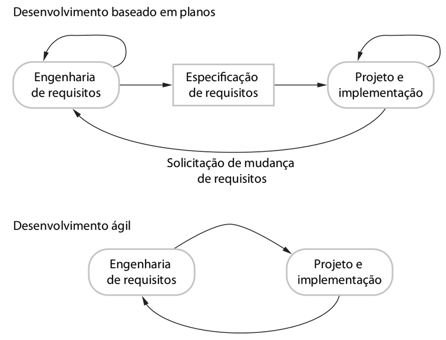
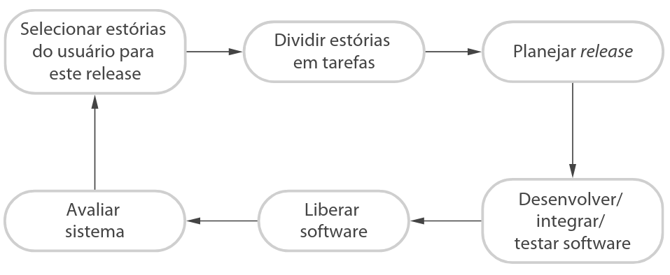
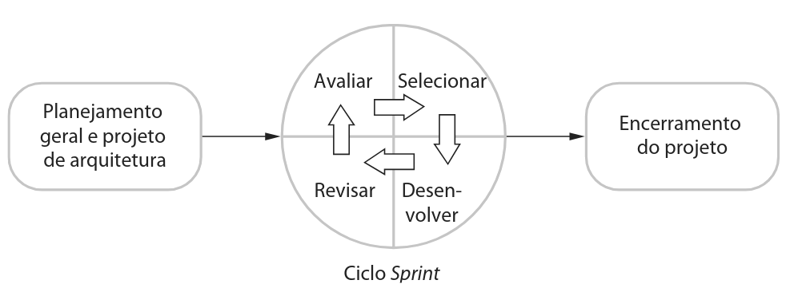

Professor: Gabriel Soares Baptista
| Valoriza-se mais... | Do que... |
|---|---|
| Indivíduos e interações | Processos e ferramentas |
| Software em funcionamento | Documentação abrangente |
| Colaboração com o cliente | Negociação de contratos |
| Responder a mudanças | Seguir um plano |
| Princípio | Descrição |
|---|---|
| Envolvimento do cliente | Clientes priorizam requisitos e avaliam iterações continuamente. |
| Entrega incremental | O cliente especifica os requisitos para cada ciclo de software. |
| Pessoas, não processos | Equipe tem autonomia para desenvolver sua própria maneira de trabalhar. |
| Aceitar as mudanças | O sistema é projetado de forma flexível para acomodar alterações. |
| Manter a simplicidade | Foco em eliminar complexidade desnecessária no software e no processo. |

Dirigido a Planos: Estágios distintos com saídas documentais formais.
Ágil: Requisitos e projeto são iterados conjuntamente.
Decisão Híbrida: A maioria dos projetos utiliza práticas de ambas as abordagens.
Foco Principal: Adquirir um sistema executável que atenda às necessidades do comprador.
| Fator | Indicação para Dirigido a Planos | Indicação para Ágil |
|---|---|---|
| Tamanho | Sistemas grandes/equipes distribuídas | Equipes pequenas e colocalizadas |
| Tipo | Sistemas críticos ou de tempo real | Sistemas corporativos dinâmicos |
| Vida Útil | Vida longa (exige documentação) | Entrega rápida para feedback |
| Equipe | Nível de habilidade variado | Alta habilidade e colaboração |
| Cultura | Engenharia tradicional e burocrática | Cultura de autonomia e informalidade |
| Regulação | Exige auditoria e aprovação formal | Menor rigor regulatório externo |

| Prática | Descrição |
|---|---|
| Pequenos Releases | Conjunto mínimo de funcionalidades que gera valor imediato. |
| Projeto Simples | Design atende apenas às necessidades atuais (YAGNI). |
| Desenvolvimento Test-First | Testes automatizados escritos antes da funcionalidade. |
| Refatoração | Melhoria contínua da estrutura sem alterar o comportamento. |
| Propriedade Coletiva | Qualquer desenvolvedor pode alterar qualquer parte do código. |
| Ritmo Sustentável | Evita fadiga para manter a qualidade do código. |
Decomposição em Tarefas Técnicas (Quadro 3.2):
| Limitações dos Testes em XP | Descrição |
|---|---|
| Atalhos na Escrita | Testes incompletos apenas para cumprir tarefas. |
| Complexidade de UI | Difícil testar interfaces de usuário de forma unitária. |
| Cobertura | Falsa sensação de segurança se partes essenciais não forem revisadas. |
O compartilhamento de conhecimento reduz riscos caso um membro saia da equipe, agindo como um ativo valioso para o projeto.

Atua como um facilitador, não como chefe. Protege a equipe de distrações externas, organiza reuniões e controla o backlog.
Vantagens: Resiliência a requisitos instáveis, visibilidade total para a equipe e feedback contínuo do cliente.
Adaptar o ágil para sistemas de grande escala exige lidar com complexidades que equipes pequenas não enfrentam.
| Desafio | Adaptação Necessária |
|---|---|
| Sistemas Brownfield | Integração com sistemas legados rígidos exige negociação política. |
| Arquitetura | Necessidade de um projeto de arquitetura prévio para coordenar múltiplas equipes. |
| Comunicação | Canais formais (videoconferências, wikis) para alinhar times distribuídos. |
| Regulações | Produção obrigatória de documentação detalhada para auditoria. |
A introdução de métodos ágeis em culturas corporativas estabelecidas enfrenta barreiras significativas.